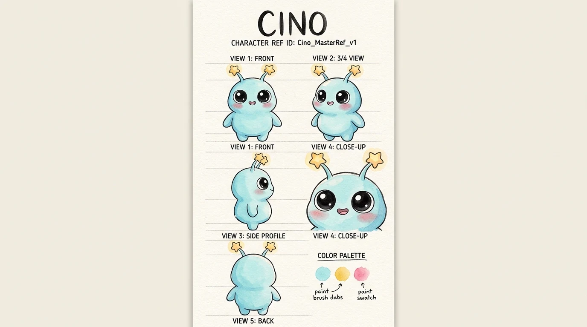
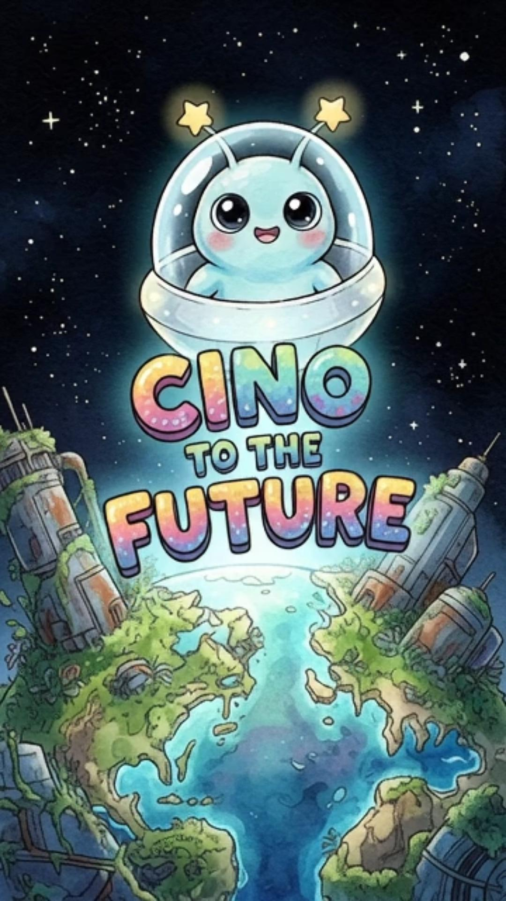
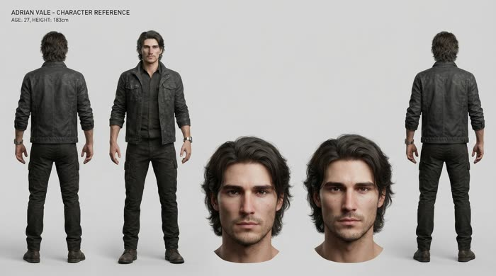
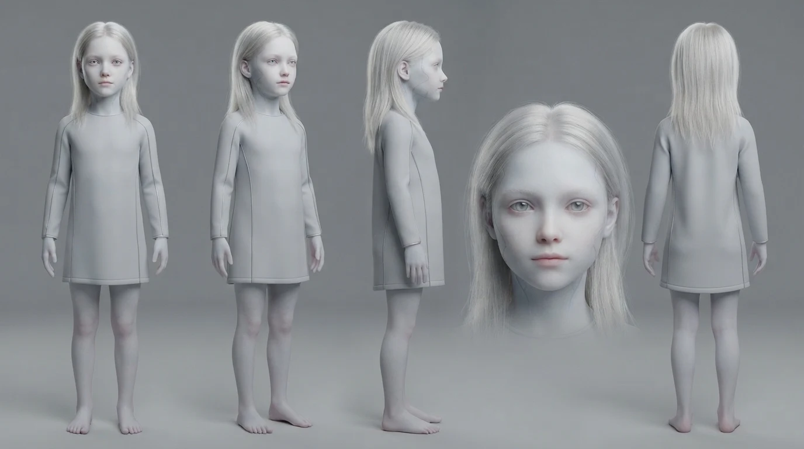
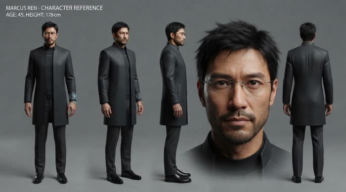

Cino
The curious wanderer at the heart of the vertical shorts — a small character carrying a very big world.
Hi, I'm [YOUR NAME] — a video editor drawn to science fiction, character-driven shorts and the craft of turning raw shots into a world that feels lived in. The work below comes from The Last Human Heir, a serialized sci-fi universe assembled from over a hundred individual shots.
Feature episodes, a recurring character short series, and the individual shots that make the world feel continuous. Click any card to play.
Every project is different, but the through-line is the same: find the story in the footage, then remove everything that gets in its way.
Build the episode from the shot library, finding the performance and rhythm before polishing a single frame.
Track character references, locations and props across episodes so the world stays coherent from scene one to seventeen.
Shape timing, dialogue rhythm and atmosphere with sound design and music — the invisible half of every cut.
Color, titles, grain and export settings tuned for the platform, whether that's a cinematic episode or a vertical short.




A recurring cast gives an edit its emotional spine. These are the faces I built continuity around across the series and shorts.

The curious wanderer at the heart of the vertical shorts — a small character carrying a very big world.

The series' central figure: disowned, searching, and slowly uncovering the truth about his family.

A presence from the past whose revelations drive the late-season episodes.

A conflicted voice in the ensemble, caught between duty and confession.
A quick look at the experience. The full, printable résumé is one click away.
[EMAIL] · [PHONE] · [LOCATION] · [LINKEDIN / PORTFOLIO URL]
Edited a 17-episode serialized science-fiction drama from a 60+ shot scene library. Owned assembly, continuity, pacing, sound design and final color; built a recurring four-character throughline across seasons.
Wrote and edited a character-led short series for vertical platforms, including three full-length installments and 60+ individual performance and reaction shots. Adapted pacing and framing for mobile viewing.
[One or two lines about the role, the deliverables and the result. Quantify wherever you can.]